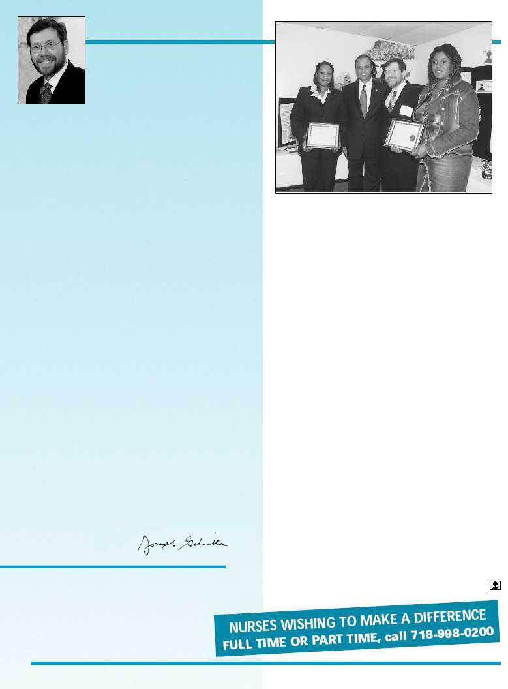

2
FROM THE
EXECUTIVE
DIRECTOR
Joseph Geliebter, Ph.D.
Editor-in-Chief
Joseph Geliebter, Ph.D.
Managing Editor
Leah Schlager, MA, MBA
Contributing Editors
Deborah Eisenberg, MS, PT;
Mari Lazar, Sonia Lopez
Contributing Writers
Elisheva Schlam,
Donna Stefkovich, Ed,D., CCC/SLP
Photo Editor
Ivan Norman
© 2003 Comprehensive Network, Inc.
On Tuesday, October 15, Borough President Adolfo Carrion,
Jr. and Assemblyman Jeff Klein attended an open house high-
lighting the company’s newest offices at 1126 Pelham Parkway
South. The two elected officials were given a tour of the facilities
and shown exactly what the program has to offer the community.
“Healthcare-related facilities are very important,” said Klein. “Com-
prehensive offers an array of services that public schools are not
able to offer children in wheelchairs or on ventilators. It is an
impressive program taking care of our most important popula-
tion, our kids.”
The program calls for school nurses from Comprehensive to
supervise wellness programs, provide care (i.e. dispensing medi-
cation) to children with special medical needs throughout the
school day, and escort children with special needs to and from
school. Early intervention professionals, including speech, occu-
pational, and physical therapists, and bilingual social workers
and coordinators, offer services to children with developmental
delays from birth to three years old. Exceptional performance by
Comprehensive’s registered nurses and Netcare’s early interven-
tion professionals were recognized at the open house with the
presentation of the “Nursing with a Difference” and “Builders of
Bright Futures” Awards.
According to Dr. Joseph Geliebter, Executive Director of
Comprehensive, these nurses are impacting the lives of the chil-
dren on a daily basis. “The acute shortage of nurses and early
intervention specialists in this area is impacting on the develop-
ment and education of local children,” he said. “Our goal is to
provide quality services that will make a real difference in the
lives of children and families throughout the Bronx.”
(Reprinted from Bronx Times, October 31, 2002)
COMPREHENSIVE OPENS
NEW OFFICES IN THE BRONX
Cont’d from page 1
New York City Mayor Michael R.
Bloomberg has announced an instructional
plan for New York City schools that “boils
down to ... freedom for schools that thrive, and a uniform
curriculum and schedule ... for those that struggle.” This soon-to-be
implemented citywide curriculum is in the spirit of the No Child
Left Behind Act of 2001 endorsed by President Bush.
In accordance with these new educational initiatives,
Comprehensive has added professional staff development,
parenting workshops, and educational enrichment programs to
our roster of offerings. These programs expand our base of services
to disadvantaged students attending mainstream schools.
Not only are educational and rehabilitation services mandated
for school children and preschoolers, but under the Early
Intervention Program they are also available to children from birth
to three. Early diagnosis and intervention have long been
recognized as being exceptionally effective in the effort to awaken
each child’s latent capabilities and to help children attain their
personal potential. (See our piece on “The Benefits of Home-Based
EI Services.”)
Not only are we diversifying, but we are also extending our
services geographically. In October, we opened our new offices
in the Bronx, increasing and enhancing our services in that
community.
This issue focuses on Autistic Spectrum Disorder, which seems
to have inexplicably affected an increasing number of children
in the last decade. We’ve included an inspirational story
– an interview with a mother of a child diagnosed with autism –
and a feature article discussing the manifestations of the disorder,
the most recent studies and theories, the confusion and hope
regarding its causes, and the possible treatments presently available,
including Applied Behavioral Analysis (ABA). As old myths die
and new information and discoveries are tested, parents, teachers
and therapists will find new pathways to reach the minds of these
“lost” children.
Finally, we are pleased to announce that we are presenting
new and exciting continuing-education seminars and workshops
dealing with such topics as ABA and Early Intervention.
A variety of hands-on clinical opportunities will aid professionals
in expanding their horizons, knowledge and skills in order to reach
children as early and effectively as possible.
Sincerely,
Awardees Althea Spencer, RN, (l) and Michelle Thomas,
Netcare Service Coordinator, (r) with Bronx Borough
President, Adolfo Carrion, Jr., and Dr. Joseph Geliebter